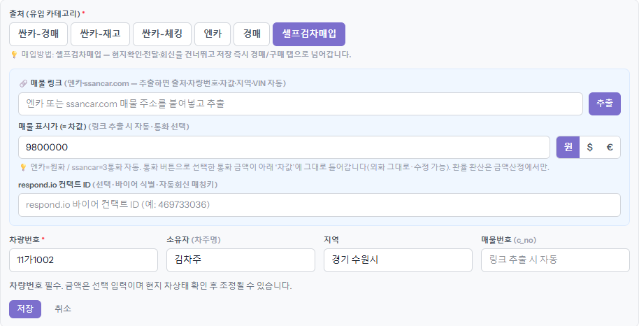
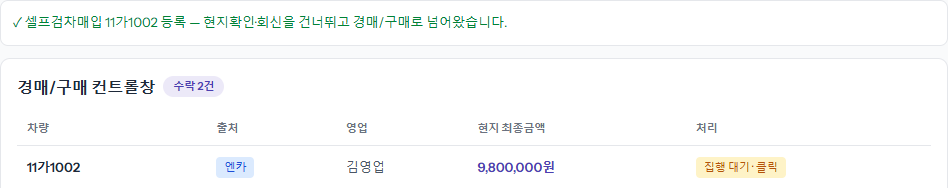

영업이 직접 가서 본 차는 검차원을 기다릴 필요가 없습니다. 출처를 「셀프검차매입」으로 등록하면 현지확인·바이어 전달·회신 단계를 건너뛰고 곧바로 「경매/구매」로 갑니다.
「매입예정(Invoice)」 [+ 매입예정 추가]에서 출처 줄 맨 끝 [셀프검차매입]을 누릅니다. 아래에 「현지확인·전달·회신을 건너뛰고 저장 즉시 경매/구매 탭으로 넘어갑니다」가 보입니다. 차값·차량번호·소유자·지역을 적고 [저장]을 누릅니다. 검차원에게 보낼 「검차 요청사항」·「차 위치」 칸은 이 출처에서는 나오지 않습니다.

화면이 「경매/구매」로 바뀌고 「셀프검차매입 … 등록 — 현지확인·전달·회신을 건너뛰고 경매/구매로 넘어왔습니다.」가 뜹니다. 차는 이미 「구매대기」입니다. 차 줄을 눌러 금액·바이어·딜러 서류를 넣고 [구매확정]을 누르는 순서는 「구매확정」 가이드와 같습니다.
